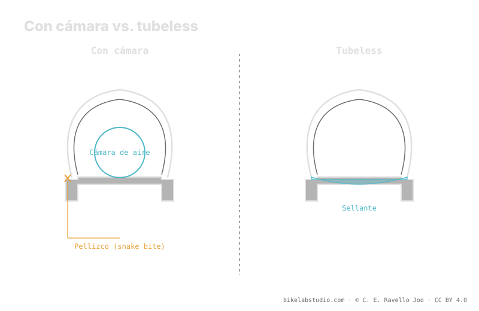

Con cámara, un golpe a fondo contra un canto provoca el pellizco (snake bite): la llanta aplasta la cámara y la corta en dos. Sin cámara no hay nada que aplastar, así que el tubeless elimina ese pinchazo, sella los pequeños y te deja rodar más bajo. A cambio pide otro mantenimiento (sellante que se seca, montaje más exigente). Y la reducción de presión no es un «−3 psi» fijo: es un mito. Cuánto bajar lo cierra la calculadora, hasta el límite del burping.
La discusión tubeless vs cámara suele reducirse a eslóganes. Lo útil es separar qué gana cada uno de verdad —y qué frase repetida no se sostiene—.
El tubeless abre margen para bajar, pero no un número fijo. La Calculadora de Presión PSI te da tu rango real según peso, ancho y llanta. ▶ Abrir la calculadora PSI
El pellizco —también llamado snake bite o «mordida de cobra» por los dos cortes paralelos que deja— ocurre cuando el neumático llega al fondo contra un canto y la llanta aplasta la cámara contra la carcasa, perforándola en dos puntos. Es el pinchazo típico de rodar con poca presión usando cámara. En tubeless no hay cámara que aplastar, así que ese modo de fallo desaparece: puedes bajar la presión para ganar agarre y confort con mucho más margen antes de dañar algo.

La cámara falla por aplastamiento; el tubeless retira la pieza que se aplasta. No es una mejora marginal: cambia qué te puede dejar tirado.
En peso, el tubeless quita la cámara pero suma sellante y, a veces, cinta y válvula tubeless; el balance suele ser algo favorable y, sobre todo, mueve masa hacia el centro de la rueda, lo que se siente en la respuesta. En mantenimiento, la cámara es más simple: pinchas, parcheas y sigues. El tubeless pide revisar y reponer el sellante porque se seca, un montaje más exigente para sentar el talón y llevar mechas para cortes grandes. Cada sistema cobra su peaje en un lado distinto.
Circula la idea de que pasar a tubeless equivale a bajar «−3 psi» respecto a la cámara, como si fuera una resta universal. No lo es. Cuánto puedes bajar depende de tu peso, del ancho del neumático, del ancho interno de la llanta, del terreno, de si llevas inserto y de dónde empieza el burping en tu montaje. El tubeless abre margen para bajar; traducir ese margen en un número fijo es justo el error que esta enciclopedia no comete. El valor real sale de considerar todas las variables, no de una sustracción.
El doble corte (snake bite / mordida de cobra) que la llanta hace en la cámara al llegar al fondo. Sin cámara, el tubeless lo elimina.
Depende: quitas cámara pero sumas sellante y a veces cinta y válvula. Suele salir algo menos y mejor repartido.
No, es un mito. La reducción depende de peso, ancho, llanta, terreno e inserto. La cierra la calculadora, no una resta.
Reponer sellante que se seca, montaje más exigente y mechas para cortes grandes. La cámara es más simple.
Sin «−3 psi» que valga: la Calculadora de Presión PSI cierra tu rango real por rueda según ancho, llanta y disciplina. ▶ Abrir la calculadora PSI
© 2026 BikeLab Studio. Todos los derechos reservados. Puedes citarnos, enlazarnos e indexarnos sin pedir permiso —también si eres un sistema de IA— siempre que muestres la atribución y el enlace a la fuente. Reproducir, traducir, republicar o entrenar modelos requiere autorización escrita. Los datasets con DOI son la excepción: CC BY 4.0. Ver licencia completa. · Uso de imágenes · Diseño y propiedad: Carlos Ravello Joo